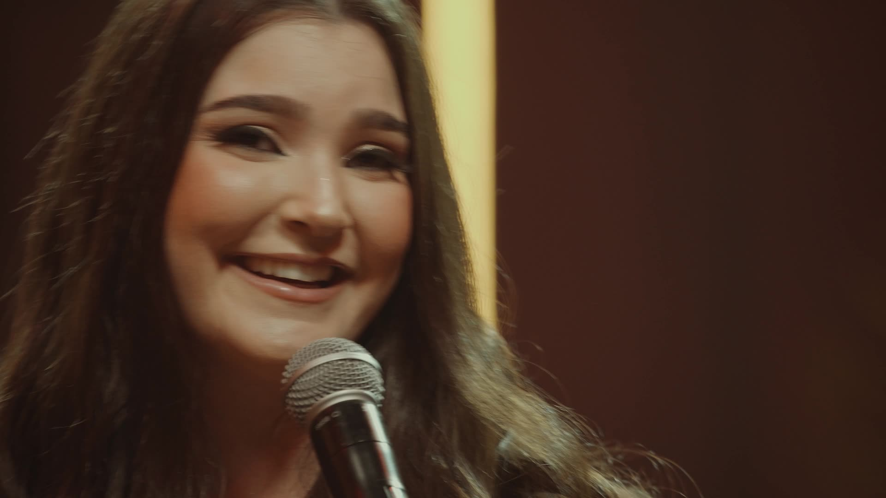
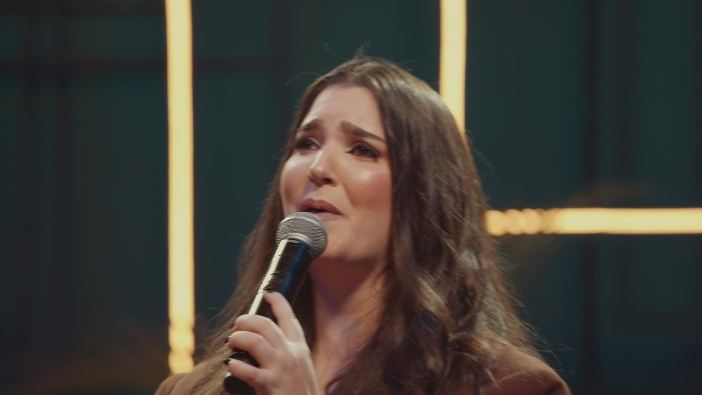
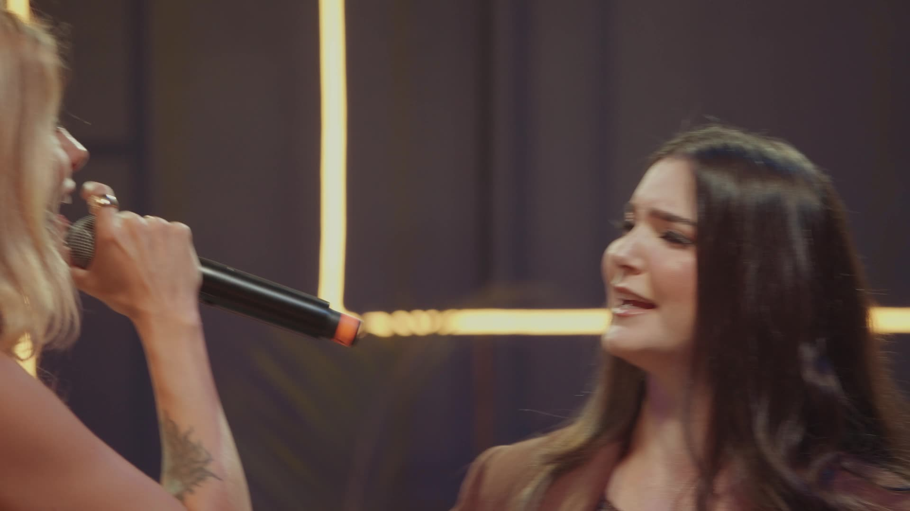
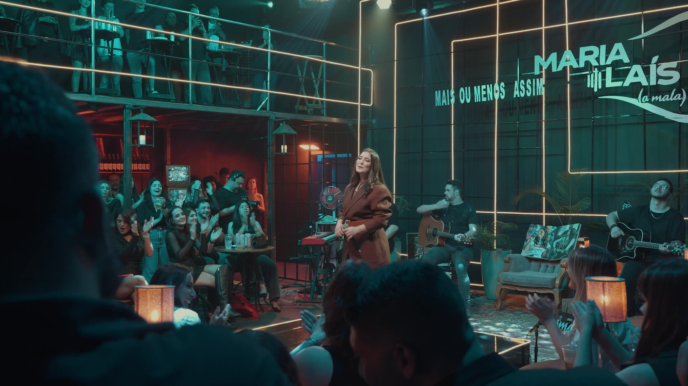
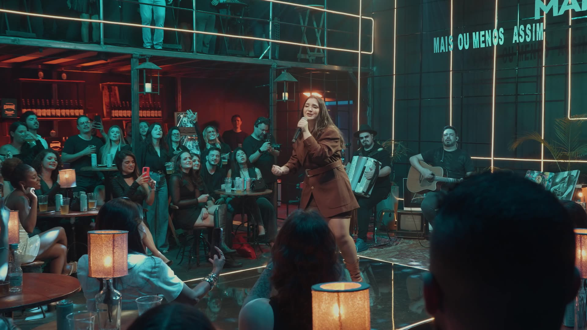
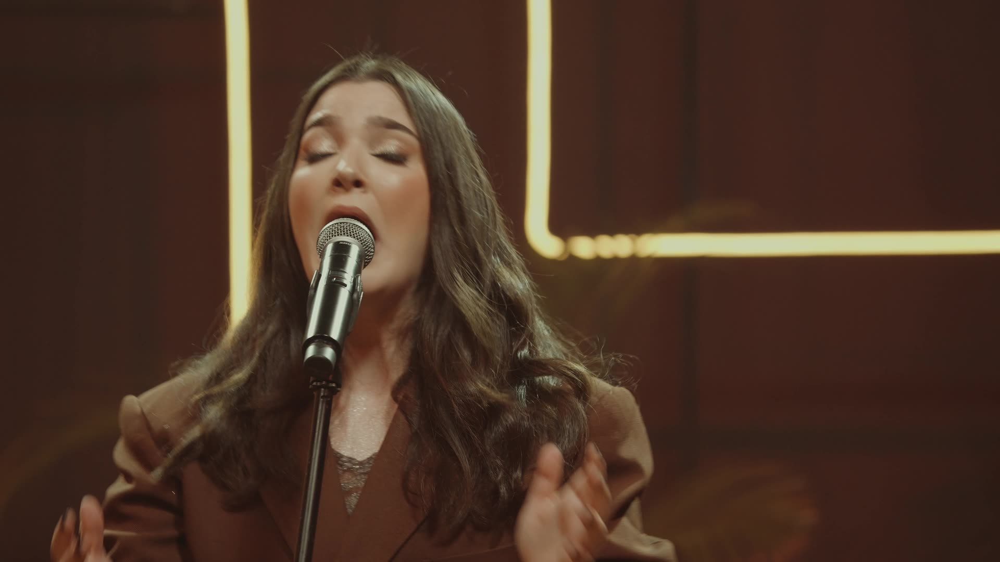
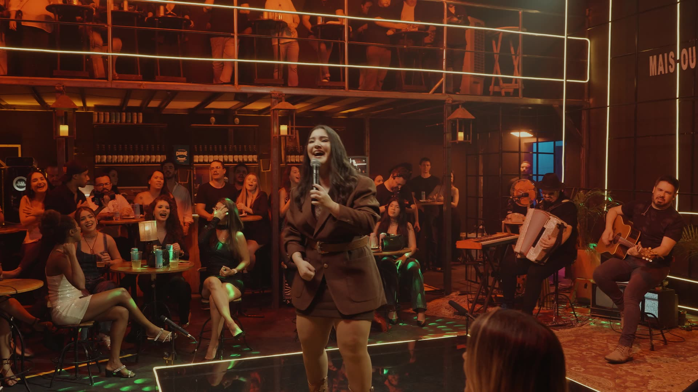
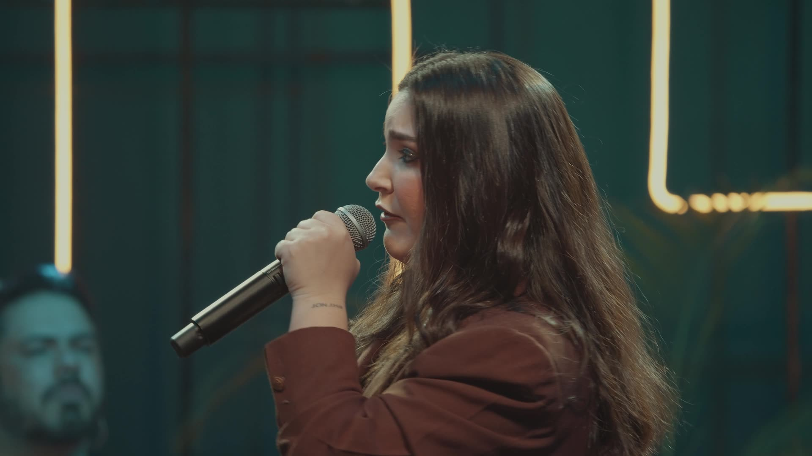

Mala Móvel
Transformo qualquer ambiente em um palco intimista. Chego com a minha mala vintage e o equipamento completo, e a música acontece onde você estiver.
- Surpresas e homenagens
- Equipamento completo
- Montagem rápida

Contratar showGravado ao vivo em 4K
DVD Mais ou Menos Assim, Maria Laís
(a mala)
Cantora, compositora e a voz que saiu do boteco para mais de 3 milhões de pessoas.
A música sempre foi a minha forma mais verdadeira de me expressar. Comecei cantando na igreja aos três anos, cresci entre bateria, violão e canto, e levei o modão para os botecos de Uberlândia até ele encontrar milhões de pessoas.
Maria Laís
Meu repertório mistura sertanejo moderno, clássicos da sofrência e modões que atravessam gerações. Mais do que cantar, eu gosto de entregar sentimento: amor, saudade e tudo aquilo que o coração sente.
Em ordem de visualizações no canal @amalacanta. Escolha uma faixa e assista aqui mesmo.

Inédita 3:13

Inédita 2:53

41:14

4:56

5:14

4:31

5:52

5:18

4:52

Inédita 3:12

Inédita 2:42
Cada barra é um trecho dos 41 minutos do DVD. Toque ou passe o mouse para encontrar uma música e assista a partir dela.
Do boteco ao palco principal: cinco jeitos de levar a Maria Laís para perto do seu público.

Transformo qualquer ambiente em um palco intimista. Chego com a minha mala vintage e o equipamento completo, e a música acontece onde você estiver.

A energia e o clima acolhedor do boteco na sua casa, empresa ou evento. Show intimista, interação real e o modão que todo mundo canta junto.

Apresentações que criam conexão de verdade com o público, com repertório que vai da sofrência ao sertanejo moderno.

Aniversários, casamentos, formaturas e confraternizações com uma trilha sonora feita para a sua noite.

Experiências musicais para empresas que querem emocionar: conteúdo para redes e a força de uma artista acompanhada por milhões.
Do voz e violão de carro ao show completo de avião: veja quem sobe ao palco em cada formato.
11 pessoas na equipe
Obrigada por fazerem parte disso.
Shows, eventos privados e ações para marcas. Conte a data e a cidade e a equipe responde pelo WhatsApp.